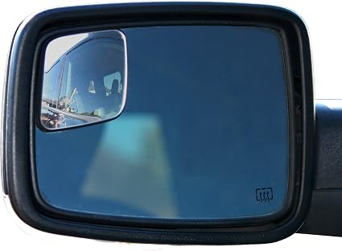
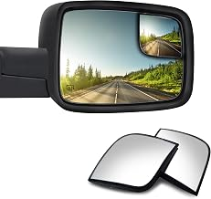
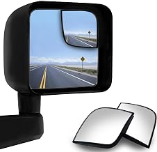
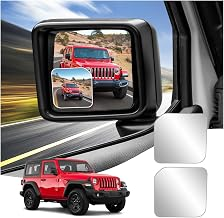
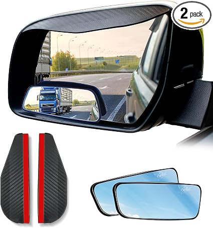
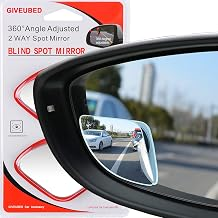

AMAZON US · EXTERIOR AUXILIARY MIRROR
车外盲点镜
新品开发方向
本页新增卖家精灵最近30天的子体销量50+证据池，用子 ASIN 实际筛选结果补充形状矩阵、车型专配 OEM、快速功能和 Wide Angle 四条路线，明确还能开发什么以及先做哪一项。
CEO REVIEW / 四路线评审
本次需要回答 4 个开发问题
市场证据用于缩小选择范围，最终立项仍需通过视野、适配、粘接、成本与退货风险验证。
01形状矩阵哪些形态有量且未覆盖
02OEM 贴面RAM 与 Jeep 先做哪一代
03快速功能哪些方案能快速上架
04Wide Angle新品路线还是关键词层
纳入圆形、矩形、椭圆、异形、包边、车型专配、卡车大尺寸贴片凸面镜。
排除车内全景镜、完整替换镜/拖车镜总成、电子 BSM、加热或灯光系统。
VERIFIED MARKET SIGNALS
有稳定需求，但通用基础款已经很拥挤
Flapen 为 26 个跟踪产品；卖家精灵为 100 个 ASIN、最近 30 天口径。两套样本用于交叉验证，不直接相加。
竞争结构
形状矩阵适合快速验证，不等于自然获得流量
78%Top 5 品牌份额
54%Top 5 商品点击份额
85%Sponsored placement
52%尺寸相关退货原因
同一父体下不同形状可能共享评论。下方评价数用于证明商品族有牵引，不代表每个子 ASIN 拥有相同销量。
高意图关键词
90 天搜索量、增长与转化
关键词搜索量增长CVR
blind spot mirror156K+15%5.8%
blind spot mirrors 2 pack58K+14%6.5%
blindspot mirror for car30K+38%6.8%
side mirror blindspot30K+22%6.1%
car side mirror blindspot7K+19%6.3%
VOICE OF CUSTOMER
路线排序仍要受尺寸、粘接和视野约束
主题允许重叠；百分比来自用户提供的 Flapen 报告。
CHILD SALES 50+ EVIDENCE
子体销量达标后，优先做低开发成本的规格创新
筛选依据为工作簿 U列“子体销量”≥50，不使用会在变体间重复的父体月销量。完整替换镜和车内全景镜单独排除。
优先立项4 片装价值包 + 2.7/3 英寸尺寸梯度
二者均可复用现有供应链与镜体能力；F-150 OEM 有溢价但需车型扫描，Clip-on 有需求但结构风险更高。
正在生成新品机会排序…
展开全部达标 ASIN可按 ASIN、品牌、标题、父体和产品类型检索
ASIN / 产品分类子体销量价格父 ASIN
查看被排除的非研究范围商品
FOUR DEVELOPMENT ROUTES
四条路线分别回答“做什么、凭什么、还缺什么”
商品卡统一只保留一张图片、一个当前价格、一个需求信号和一项待验证资料；Amazon 数据为 2026-08-26 快照。
形状矩阵
去重形态、看需求、标记已上架/已立项
车型专配 OEM
推进 RAM / Jeep，并新增 F-150 评估
快速功能
只留胶材、铝框耐久、雨天视野三类
Wide Angle
判断是独立产品方向，还是通用利益点
路线 01市场形态
SHAPE MATRIX
一张卡代表一种轮廓，先看需求，再看是否已经覆盖
圆形的无框、ABS、铝框和防水胶统一归并；矩形、长条矩形、圆角矩形和 Oblong 归为一簇。47 个支持 ASIN 仍保留在下方证据台账中。
本路线要做的决策
选择未覆盖形态，并排除重复项目
重点核对椭圆/方形的增量价值，以及楔形、矩形与现有上架款是否真正存在视野或安装位差异。
Amazon 去重形态矩阵8 个唯一形态 · 单一当前价 · 47 个支持 ASIN 可展开核对
164观察到的商品卡
120去重 ASIN
47形态证据 ASIN
8唯一形态簇
正在读取 Amazon 形态证据…
公开 “bought in past month” 是需求信号，不是精确销量；带 * 的月购或评价存在父体共享风险。价格、榜位和月购均为 2026-08-26 页面快照。
查看 47 个支持 ASIN 与价格
正在整理证据台账…
路线 02车型壁垒
OEM-FIT OVERLAY
RAM / Jeep 继续推进，F-150 作为新增高客单候选
子体销量50+表中出现 2 个独立 F-150 14th Gen 专配 ASIN，价格约 $26。专配价值来自原车轮廓与更低遮挡；RAM 仍需确认 DS Classic / DT 第五代，所有车型都要排除 towing mirror。
立项前必须补齐
车身代号、镜型排除、左右扫描、装配公差
先做非拖车镜版本；驾驶侧与乘客侧分别定义视野，不强求左右完全同形。
Amazon 车型专配证据6 个 ASIN · RAM / Jeep 在研 + F-150 新增候选

RAM 2009-2018B01MEHTGTX打开 Amazon ↗
WadeStar Custom Fit
$19.99当前价
需求信号3,327 条评价
需补资料DS 代际、非拖车镜、左右轮廓

RAM 4th Gen / ClassicB0F5P7TMR2打开 Amazon ↗
RAM 2009-2024 Custom Fit
$25.99当前价
需求信号4.8★ · 21 条评价
需补资料确认不覆盖 DT 第五代

Jeep JKB083L99QMQ打开 Amazon ↗
Wrangler 2007-2017
$26.99当前价
需求信号4.7★ · 47 条评价
需补资料左右扫描与边缘装配公差

Jeep JL / JTB0H3V679YR打开 Amazon ↗
Wrangler / Gladiator 2018-2026
$19.99当前价
需求信号5.0★ · 4 条评价
需补资料JL/JT 年款与镜片轮廓共用性
 F-150 2021-2025
F-150 2021-2025B0F571FCPX打开 Amazon ↗
F-150 Custom Fitted Overlay
$25.99当前价
子体销量100 · 4.4★ · 58 条评价
需补资料BLIS/非BLIS与左右镜轮廓
F-150 14th Gen / BLISB0BVW6FXXC打开 Amazon ↗
NXTGEN Extended View
$26.95当前价
子体销量50 · 4.2★ · 81 条评价
需补资料BLIS 图标避让与年款边界
车型年款来自商品标题，不替代实车验证。F-150 两个样本合计子体销量150，只支持进入扫描评估；RAM、Jeep、F-150 都必须用 VIN、车身代号和原车镜型建立排除表。
路线 03快速功能
QUICK DIFFERENTIATION
功能路线只保留三项能快速实现的方案
去除定位模板、普通 ABS 包边和现有楔形基线。短期只评审备用 VHB + 清洁包、铝框耐久、雨眉/防水膜，不做灯光、加热或电子 BSM。
评审标准
不改核心镜体，4 周内可完成样品验证
必须对应粘接、耐久或雨天可视性中的一种真实结果，不只换外观或文案。
快速功能竞品证据3 个 ASIN · 每个样本对应一项可落地功能
粘接可靠
B097Q7QMNT打开 Amazon ↗
Waterproof 3M Adhesive
$7.99当前价
需求信号4.6★ · 1,432 条评价
快速方案预贴 VHB + 备用胶 + 清洁包
铝框耐久
B09WP7MLP9打开 Amazon ↗
Rust-resistant Aluminum
$6.99当前价
需求信号4.5★ · 4,509 条评价
快速方案复用现成结构，验证防锈与边缘保护

雨天视野B0C4TK47LS打开 Amazon ↗
Mirror + Rain Guard Kit
$9.99当前价
需求信号4.1★ · 778 条评价
快速方案雨眉/防水膜小批套装，不先开模
三项方案都必须通过安装、冷热循环、雨淋/洗车与粗糙路面验证；只换颜色、外壳或说明书不计为功能新品。
路线 04备选方向
WIDE ANGLE KEYWORD CHECK
“Wide Angle”在多个形态标题中高频出现，先判断它是不是独立产品
本次定向搜索中，D 形、圆形、矩形和扇形商品都把 Wide Angle 写入标题，说明它更像通用利益点。是否值得独立立项，要看能否用实车视野测试证明新增价值。
当前判断
先作为关键词/利益点层，暂不单独定义形态
只有视野面积、畸变、主镜遮挡的 A/B 数据显著优于现有款，才升级为独立新品方向。
标题明确包含 Wide Angle 的商品4 个 ASIN · 覆盖四种形态 · 2026-08-26 定向搜索
 D 形
D 形B0F3CBS7JQ打开 Amazon ↗
Wide Angle Adjustable Stick
$11.99当前价
需求信号3K+ 月购*
标题用法形状 + Wide Angle + Adjustable
圆形
B07ZFHF14Q打开 Amazon ↗
Round Wide Angle Mirror
$6.99当前价
需求信号6K+ 月购*
标题用法基础形态也使用 Wide Angle
矩形
B0CRL16HZT打开 Amazon ↗
Universal Wide Angle Mirror
$6.59当前价
需求信号700+ 月购
标题用法Universal + Wide Angle + 形状

扇形B09R44HWWC打开 Amazon ↗
Wide Angle Convex Fan Shape
$6.99当前价
需求信号100+ 月购
标题用法角度利益点与形状并列
带 * 的月购来自变体页，可能共享父体数据。四种形态均使用 Wide Angle，现阶段应先作为标题利益点和实车视野验收项。
ACTIVE PORTFOLIO
在研组合：只看状态、缺口与下一决策
4 款为内部已立项项目，椭圆仍是机会评估；表内不把计划写成结果。
项目当前状态缺少资料下一决策
Curved Wedge已立项与现有楔形的同车视野/安装位 A/B保留独立 SKU 或合并
Wide Rectangle已立项与现有 XL 的遮挡、尺寸和使用场景差保留独立 SKU 或合并
D-Shape已立项横向视野增量与主流原车镜兼容性样品验证后决定首单
Rhombus已立项独立需求证据与小批 CTR / CVR小批上架或停止
Oval待评估目标尺寸、BOM 成本、与 D 形的差异是否转正式立项
共用开发底座真实凸面玻璃 + 防飞散背膜 · 预贴 VHB + 备用胶 + 清洁包 · 共享内托
50+新增候选P0：4片装、2.7/3英寸尺寸梯度 · P1：F-150 OEM、Clip-on · P2：胶囊/Wing/Falcon轮廓去重
PROJECT EXECUTION CALENDAR
预计推进时间：2026 年 9 月至 12 月
每月只保留一个核心输出和一个决策门，减少并行项目堆叠。
月份重点当月输出决策门
SEP9 月低成本快启4片装利润包 + 2.7/3英寸样品 + 现有4款差异A/B确认首个新增 SKU
OCT10 月OEM 专配RAM/Jeep边界确认；获取F-150 14代左右原车镜决定 F-150 是否进入正式立项
NOV11 月安装功能备用胶/清洁包共用方案 + Clip-on 三档夹爪样件选免开模套装或结构新品
DEC12 月轮廓收敛胶囊/Wing/Falcon去重 + Wide Angle实车视野A/B只保留一个有可感知差异的方向
VALIDATION GATES
每条路线都要有明确停止条件
避免因为“已有竞品”就跳过真实适配、视野和粘接验证。
形状门
4 款分别记录视野增量、主镜遮挡、安装位置和外观偏好；楔形/矩形额外与现有款做同车 A/B 对比。
停止条件无可感知差异，或新增轮廓未带来点击/转化提升且增加库存复杂度。粘接门
冷热循环、雨淋、洗车与粗糙路面后检查脱落、起翘和镜体角度变化。
停止条件备用胶仍无法覆盖主流曲面，或用户需频繁重贴。车型门
OEM 款以车身代际、是否拖车镜、左右镜轮廓建立清晰适配表。
停止条件无法用标题/A+清楚区分代际，或实车边缘间隙不稳定。商业门
分别核算通用矩阵与 OEM 专配的 BOM、FBA、广告和退货成本。
停止条件只靠低价竞争，或 OEM 溢价不足以覆盖专配库存复杂度。SOURCE LEDGER & LIMITATIONS
证据台账与口径边界
所有 ASIN 均可点击核对；没有子 ASIN 销量时，不把评价数伪装成销量。
Amazon Best Sellers 与形态定向搜索
访问 2026-08-26抽取畅销榜 #1-38、#51-80，并补查 oval、rhombus、D-shape、square；共观察164张商品卡，去重120个ASIN，保留47个形态证据ASIN。
Amazon “wide angle blind spot mirror” 定向搜索
访问 2026-08-26单独复核标题、当前价与公开月购，保留 D 形、圆形、矩形、扇形 4 个标题明确包含 Wide Angle 的样本，用于判断该词是独立方向还是利益点层。
Flapen 市场报告
快照 2026-08-25此前用户提供的市场报告，用于市场额、搜索、竞争、评论主题与退货原因判断；跟踪样本为 26 个产品。
卖家精灵市场报告 + 自定义市场分析
导出 2026-08-26本次两份 PDF：100 个 ASIN、最近 30 天；样本月销量约 98,900 件、月销售额约 $996,900。JOYTUTUS 品牌月销量份额 15.66%、月销售额份额 15.62%。均为平台估算，不等同公司财务实绩。
卖家精灵 Product Automotive 最近30天明细
文件 762183 · 2026-08-26原表1,284行，以 U列“子体销量”≥50筛得119个子ASIN；按本页车外辅助镜边界排除7个完整替换镜/车内镜后，保留112个ASIN、65个父体。子体销量合计37,150仅用于本次达标样本排序，不等于全市场销量。
JOYTUTUS 变体家族与评论口径
Amazon 公开页面圆形、XL 圆角矩形、爱心形和楔形 4 个子 ASIN 属于同一变体家族；4.5★ / 101 条为父体共享评价，不重复计算。
内部《多款盲点镜 对标产品》
文件更新 2026-08-19工作簿 Sheet1 的 A1:D5 共 4 条立项记录、8 张嵌入图和 4 个 Amazon 对标链接；本页据此新增4款“新开发立项”。尺寸取自参数图，不等于最终量产规格。
内部项目状态与排期
计划，不是结果4 款“已立项”、椭圆“待评估”及 9-12 月推进顺序均为内部计划；进入采购前仍需成本、利润与资源确认。
本次不直接立项
- 把父体共享评价直接当作菱形或其他子形状的独立销量
- 未确认 DS/DT 代际的 RAM “全覆盖”贴面
- 灯光、加热、电子 BSM 或复杂锁止结构
- 不区分车型的大尺寸 Wide Angle 通用款
- 只写“3x/170°”但没有实车视野测试的卖点
评价、价格和月购标签会变化；正式立项前需再次核对 Amazon、卖家精灵/类目数据与供应商报价。
展开原始 ASIN 链接台账
B07ZFHF14Q · 2" 圆形
B082TWL5CR · 椭圆
B01J7CC6FS · 半椭圆
B087F75B23 · 弧边楔形【新开发立项对标】
B0F3CBS7JQ · D 形半椭圆【新开发立项对标】
B09BN3G95V · 长条矩形【新开发立项对标】
B0777JTJGJ · Amfor 矩形
B09BJ1DK9P · ABS 包边
B09WP7MLP9 · 铝框
B097Q7QMNT · 防水 3M 胶
B087CSBRGP · 菱形【新开发立项对标】
B0FHW5SJBT · 爱心形
B01MEHTGTX · RAM 2009-2018
B0F5P7TMR2 · RAM 2009-2024 4th Gen
B083L99QMQ · Jeep JK 2007-2017
B0H3V679YR · Jeep JL/JT
B0C4TK47LS · 360° + 雨眉
B09R44HWWC · 扇形 Wide Angle
B0GVJ8MXN4 · JOYTUTUS 圆形【已上架】
B0GVJLKFZD · JOYTUTUS XL 圆角矩形【已上架】
B0GVJ3BQTP · JOYTUTUS 爱心形【已上架】
B0GVJ8T99M · JOYTUTUS 楔形【已上架】